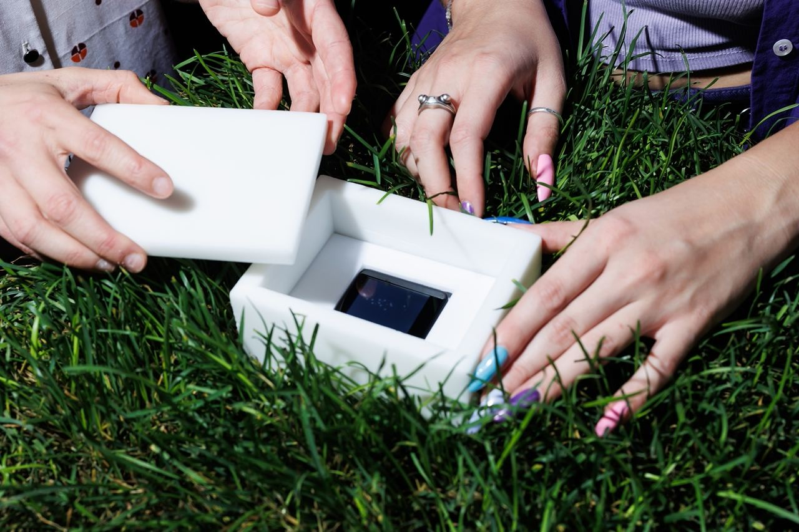
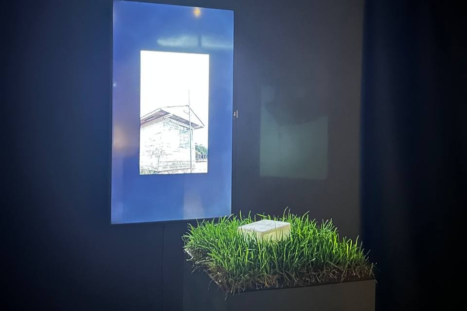
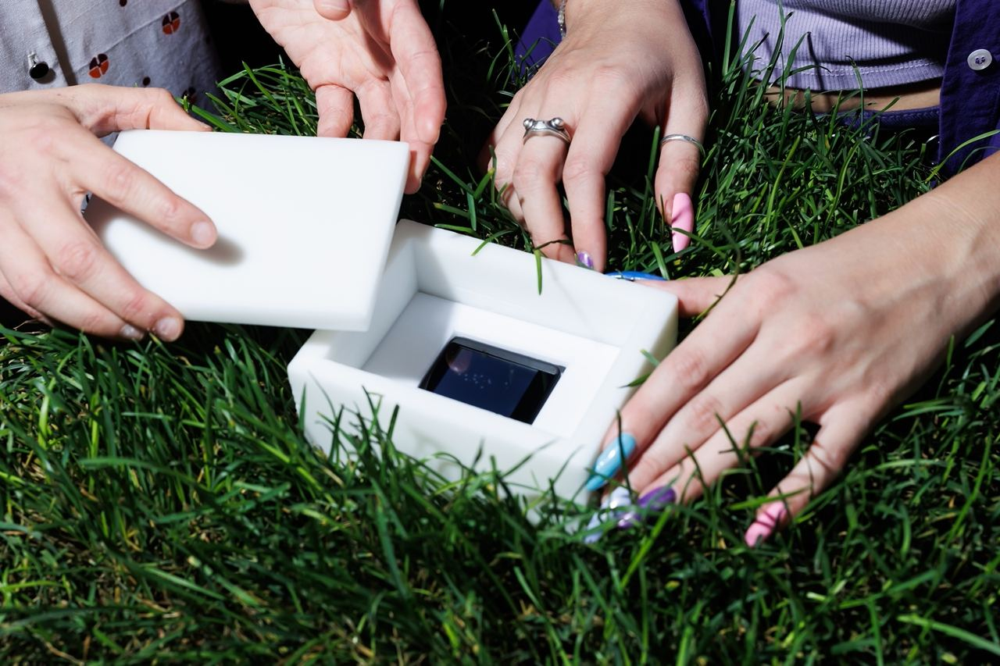
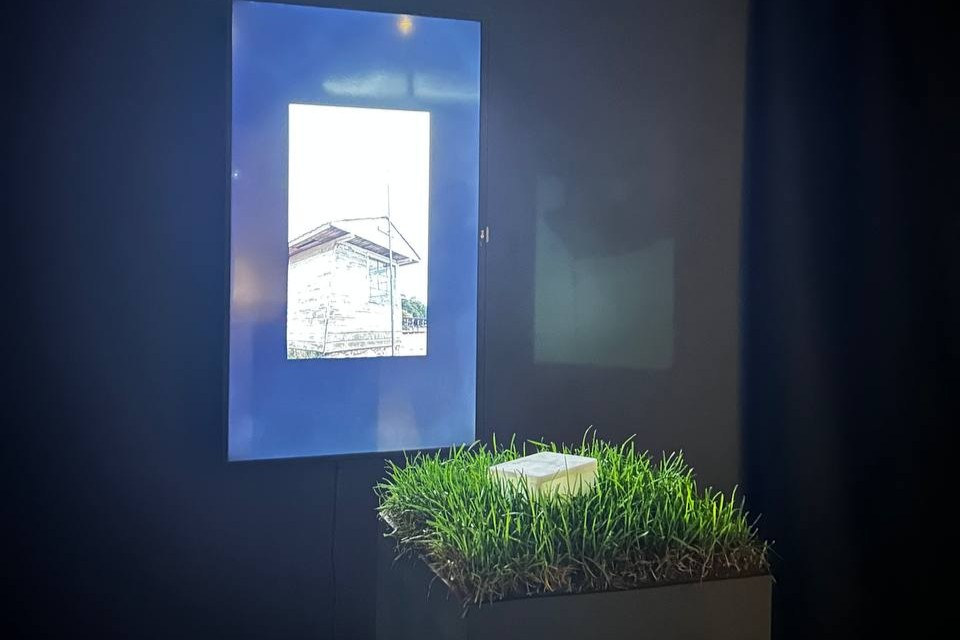

Чуткость
март - сентябрь 2023
О проекте
Что такое чуткость? Это не просто внимательное отношение к миру, но и способность воспринимать его многогранность с детским любопытством, открытостью к незнакомому. "Чуткость как новая экология" — медиа-инсталляция, созданная Владой Ивановой (YZMA), Ириной Даниличевой, Александрой Далибах и Яной Сорокиной, возвращает зрителя в мир детских игр, где каждая мелочь становится значимой.
Инсталляция черпает вдохновение из ритуала создания "секретиков" — тайников с драгоценными "сокровищами". Центральным элементом стала шкатулка из кокосового воска, внутри которой скрыт обобщённый образ значимого матча "Зенита", где траектории игроков превращены в световые точки — подобие полузабытого воспоминания. Этот интерактивный объект можно открыть, потрогать, вдохнуть аромат газона, а воск, реагируя на тепло рук, постепенно стирается, символизируя хрупкость мира под воздействием человека. Рядом представлены интервью с болельщиками, где вместе с авторами они размышляют о чуткости и экологии, усиливая связь между этими понятиями.
Взаимодействие с инсталляцией переосмысливает экологию как бережное отношение к хрупкому. Детское любопытство и забота становятся основой нового мышления, где каждый жест несёт ответственность за окружающее. Сайт проекта дополняет это материалами об экопривычках, трендах и челленджах, доступных каждому.
Процесс
Создание "Чуткости" началось с исследования тем воля и контроль, социальных и экологических ареалов, где футболист становится иконой, а бегство с поля — метафорой невозможности игнорировать проблемы. Концепция "Чуткости как новой экологии" опиралась на старую проблему взаимодействия человека и природы, переосмысленную через спекулятивные и фантастические идеи. Метафора аккумулятора — накопления чувств — легла в основу интерактивной шкатулки.
Художники экспериментировали с разной высотой травы как отражением стиля игры, исследовали племенную комфортность (эмоциональную и физическую) и процесс взросления, где мы разучиваемся быть чуткими. Интервью с футболистами и болельщиками, снятые в формате микрофильмов, дополнили инсталляцию живыми голосами. Работа с кокосовым воском и световыми точками требовала точных расчётов и тестирований, что заняло месяцы.
 


